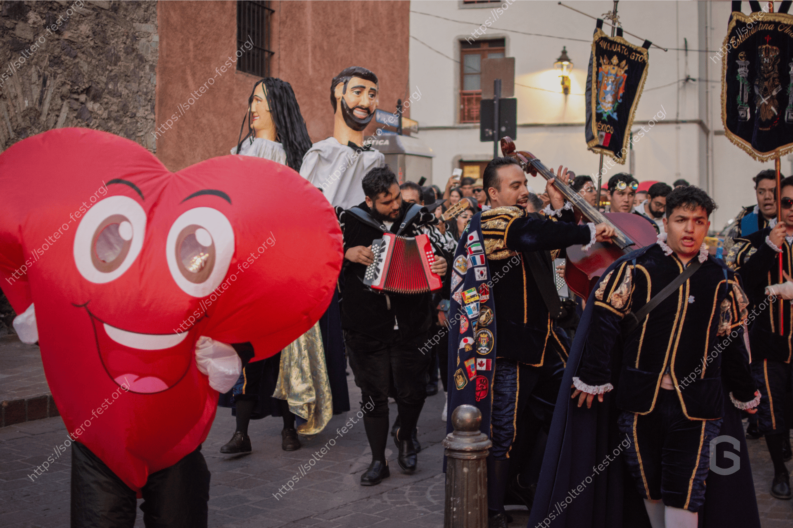

Recorrido cultural nocturno
Una experiencia grupal al aire libre que recorre algunos de los puntos más representativos del centro histórico de Guanajuato, acompañada por música tradicional y un ambiente festivo.
Un encuentro diseñado para personas solteras que desean vivir Guanajuato desde una perspectiva distinta, combinando convivencia, tradición, música y espacios para nuevas conexiones.
Ir al sitio oficial del Soltero FestSoltero Fest es una experiencia pensada para quienes buscan algo más que una salida convencional. A través de actividades colectivas y recorridos urbanos, el evento crea un entorno natural para interactuar, compartir y disfrutar sin presiones.
Cada edición reúne a personas solteras de distintas ciudades, interesadas en conocer gente nueva mientras descubren Guanajuato de una forma auténtica y relajada.
Una experiencia grupal al aire libre que recorre algunos de los puntos más representativos del centro histórico de Guanajuato, acompañada por música tradicional y un ambiente festivo.
Un espacio opcional pensado para quienes desean prolongar la convivencia en un entorno musical, relajado y con dinámicas sociales.
El punto de partida del Soltero Fest es un recorrido nocturno por el centro histórico de Guanajuato, donde los asistentes caminan, cantan y conviven como grupo mientras descubren la ciudad desde otra perspectiva.
La experiencia se caracteriza por su ambiente abierto y dinámico, en el que personas que no se conocen previamente comparten la actividad en un contexto relajado y social.

Para quienes desean extender la experiencia, el festival contempla un encuentro nocturno adicional en un espacio cerrado, con música, ambiente temático y actividades diseñadas para fomentar la interacción social.
Este segmento del evento permite a cada asistente decidir cómo desea vivir su noche, ya sea continuando la convivencia o dando cierre a la experiencia principal.